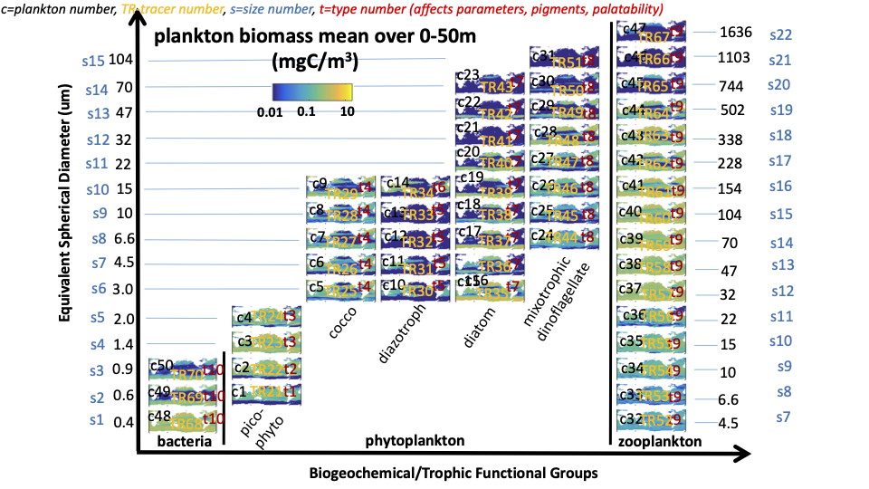

Tracers
Nutrients TRAC01-TRAC20
Tracer ID - Tracer Name - Nutrient
- 1 - TRAC01 - DIC
- 2 - TRAC02 - NO3
- 3 - TRAC03 - NO2
- 4 - TRAC04 - NH4
- 5 - TRAC05 - PO4
- 6 - TRAC06 - FeT
- 7 - TRAC07 - SiO2
- 8 - TRAC08 - DOC
- 9 - TRAC09 - DON
- 10 - TRAC10 - DOP
- 11 - TRAC11 - DOFe
- 12 - TRAC12 - POC
- 13 - TRAC13 - PON
- 14 - TRAC14 - POP
- 15 - TRAC15 - POFe
- 16 - TRAC16 - POSi
- 17 - TRAC17 - PIC
- 18 - TRAC18 - ALK
- 19 - TRAC19 - O2
- 20 - TRAC20 - CDOM
Biomass TRAC21-TRAC70
Refer to the chart for size classes, functional groups, and grazing preferences
Grouping - Tracer ID numbers - plankton number
- pico - 21:24 - c1 to c4
- cocco - 25:29 - c5 to c9
- diazotrophs - 30:34 - c10 to c14
- diatoms - 35:43 - c15 to c23
- mixotophic dinoflagellates - 44:51 - c24 to c31
- zooplankton - 52:67 - c32 to c47
- heterotrophic bacteria - 68:70 - c48 to c50
All tracer names are in the form "TRAC[ID]" where [ID] is the tracer ID number.

Diagnostic Files
A description of the files that are saved to the ecco_gud_DATE directory underneath darwin3/verification/dar_one_config/run/[config_name]/run
- 3d file
- tracer abundances
- nutrients
- plankton
- tracer abundances
- par file
- PAR (sunlight) levels
- GR file
- grazing loss of each plankton
- GRGN file
- grazing gain for each plankton
- PC file
- carbon-specific phototrophic growth rate for c1-c4
- PP file
- primary production for each plankton
- chl file
- chlorophyll concentration for c1-c31 (autotrophic phytoplankton)
More diagnostics can be added! Submit a github issue request or email birdy@mit.edu.